Redesigning the "My Car" homepage of IM Motors app — through user research, data analysis and competitive benchmarking, defining the optimal experience for remote vehicle control.
通过用户访谈、数据埋点与竞品分析，重新定义智己汽车APP爱车首页的远控体验与信息架构。
智能汽车、手机APP、移动互联网三者的有机结合为智能汽车车主的良好用车体验提供了有效保障。借助手机APP，车主无需进入车辆便可通过网络信号或近场蓝牙远程实现解锁、开空调等操作，有效提升了车主用车效率与实际体验。
Smart vehicles, mobile apps, and connected networks together enable remote vehicle control — from unlocking to AC activation.
智己汽车APP的爱车页面为车主提供了大量车辆远程控制功能，同时还包括了虚拟车模、汽车服务等功能模块，致力于向提供舒适省心的用车服务。
IM Motors' "My Car" page offers remote control, a 3D model, and service modules — built for a seamless ownership experience.
距离上次车控从0-1的方案输出已经一年，随着团队不断努力的小步迭代下，之前构建的车控场景也越发的完整；随着越来越多真实车主用户的加入，我们也面临着更多真实使用场景的使用考验。
目前智己APP爱车页面存在首页有效信息较少、楼层卡片布局混乱、原子功能体验不佳等问题。因此，本次研究通过内部车主访谈，并结合其他数据来源，来帮助定义爱车页面内容，优化用户体验，明确业务优化方向。
Yet the page suffers from sparse info, cluttered layout, and poor atomic-function UX. This research aims to fix that.
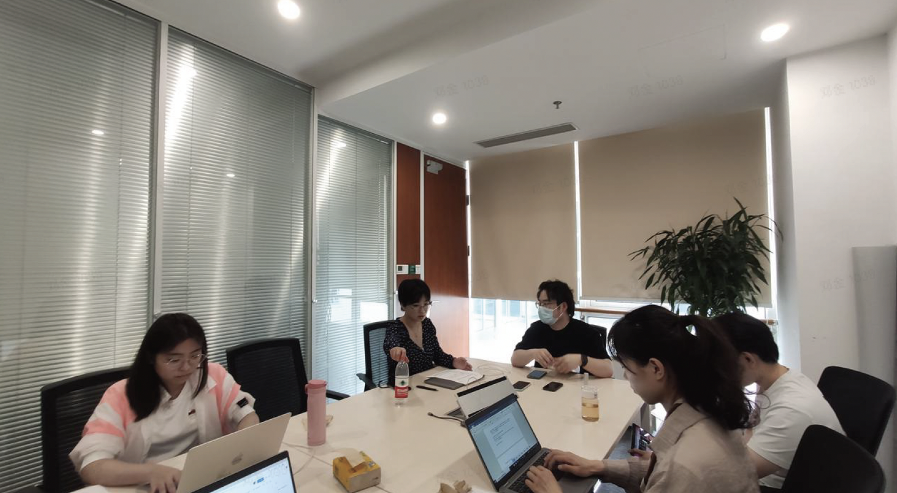
Identify high-frequency driving scenarios and the remote control behaviors, pain points, and motivations behind them.
了解车主高频用车场景，找到远控功能使用行为与背后的痛点和原因。
Generate insights to improve the car-control homepage and atomic function experience — balancing utility with emotional connection.
提出提升车控首页与原子功能体验的用户洞察，在满足工具属性基础上建立情感连接。
Integrate business needs — smart mall, service benefits — with user habits to form actionable design recommendations.
结合智选商城、服务权益等业务，提出满足用户使用习惯的设计建议。
Translate research insights into concrete homepage design decisions — restructuring information hierarchy to serve both user needs and business goals.
将研究洞察转化为首页改版方案，重构信息层级，同时满足用户使用需求与业务目标。
Benchmarked IM Motors against Tesla, NIO, Xpeng, Lynk & Co to identify best practices in EV app car-control design.
对比特斯拉、蔚来、小鹏、领克等品牌APP，梳理电车与油车在远控功能设计上的共性与差异。
Analyzed 30-day click tracking data for all car-page cards and atomic functions — measuring usage frequency and success rates.
分析过去30天车控页面各卡片点击数据与原子功能使用埋点，量化用户行为与成功率。
11 in-depth interviews with IM Motors employees who use the app frequently — covering daily scenarios, pain points, and emotional drivers.
面向11位高频使用APP的智己车主进行深度访谈，挖掘日常用车场景、痛点与情感化需求。
Collected and categorized user community posts and operations data — mapping real-world complaints and feature requests.
整理用户社区帖子与运维反馈，提取真实痛点与功能诉求，补充访谈结论。
以呈现车辆的基本数据信息为主，可远程控制的功能不多，车主和用车服务篇幅占比较大并附带车辆配件商城以满足用户升级需求。
全栈自研的技术能够让远程信号控制更加灵活有效。小鹏和特斯拉的车控功能以车辆控制为主，且特斯拉更为精简，限制了展示的功能个数，但同时也带来了一些不便。
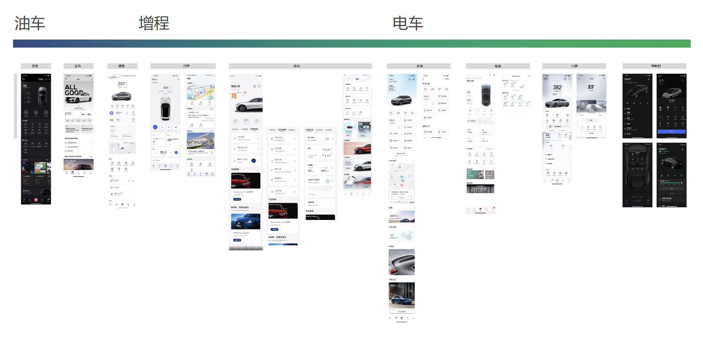
围绕车主全生命周期，覆盖高频的远程车辆控制和中低频的车辆服务。让用户能够个性化自定义服务或原子功能的顺序。
关注在车主用车的高频控车功能和场景，提供出更具体和细分的功能选项。让用户更精准的操作和获得反馈。
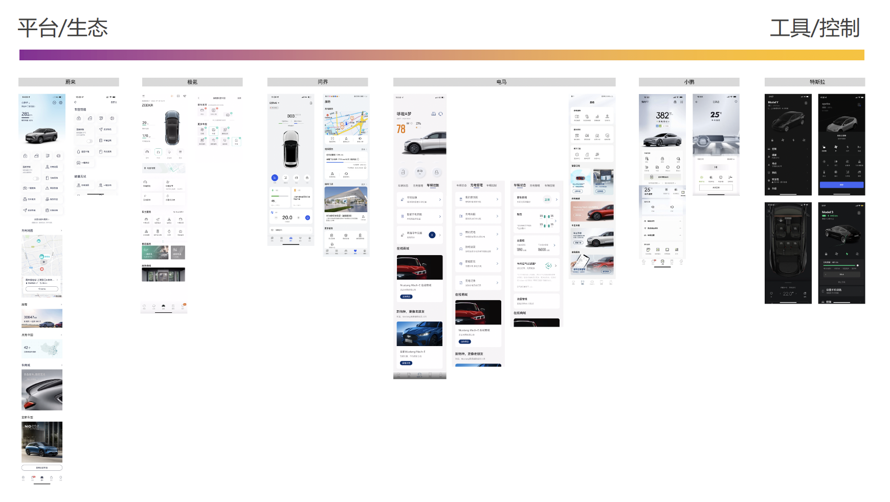
于 2022/08/03 统计过去30天内车主爱车页面点击总人数、各卡片点击人数、次数与人均次数
Tracking 30-day click data: total users, per-card counts, and per-user averages as of 2022.08.03
点击次数排名前五的卡片为：权益（6,812次）、私人管家（6,392次）、图库（3,781次）、体验及服务中心（3,204次）、配置解析，说明用户权益、售后服务等仍是用户最关心的内容
Top 5 by clicks: Benefits (6,812), Butler (6,392), Gallery (3,781), Service Center (3,204), Config — ownership rights and after-sales remain primary concerns.
私人管家人均点击次数最高（14.97次/人），远高于其他卡片（权益 6.67、图库 13.55），可能与品牌目前处于车辆交付高峰期，新手车主较多有关；同时点击人数仅 427 人，较少，可能与私人管家入口较多有关
Butler: 14.97/user — highest rate. Only 427 unique users vs. Benefits' 1,022, likely due to multiple entry points during peak delivery period.
权益点击人数最多（1,022人）、总次数 6,812次，可以考虑将充电次数等关键信息的优先级提高，减少车主点击层级；人均 6.67 次适中，主要与反复查看充电权益有关
Benefits: 1,022 users, 6,812 total taps (6.67/user) — surfacing charging quota info could reduce tap depth.
点击次数最多，可考虑将关键信息优先级提高
人均点击最高，与车辆交付高峰期及多入口相关
成功率不足六成，人均失败5.66次，体验急需优化
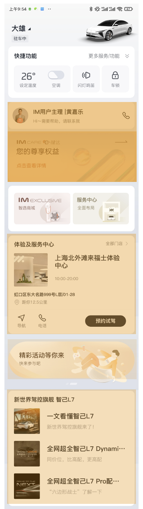
于 2022/08/03 统计过去30天内原子功能各功能点击人数、次数以及高频功能（车锁与空调）远控成功率
Tracking 30-day atomic function data: click UV/PV per feature, and remote-control success rates for lock and AC.
原子功能点击 UV/PV 排名前五均为：解闭锁（1103 / 21965）、开关空调（1025 / 11140）、内页开关空调（513 / 2327）、空调温度调整（500 / 2012）、鸣笛闪灯（281 / 1430），说明车锁与空调是车主最常使用的远控功能，且车主较少进入内页开关空调与调整温度
Top 5 atomic features by UV/PV: Lock/Unlock, AC On/Off, AC Inner Page, AC Temp, Horn/Flash. Lock and AC dominate remote usage.
座椅加热、方向盘加热使用人均次数分别为 5.75、4.41，与当前季节反常，可能是近期提车人数较多，新车主进行功能尝试或展示
Seat heat (5.75/user) and wheel heat (4.41/user) are unseasonably high — likely new owners exploring features after delivery.
开关空调成功率仅为 55.92%，且人均失败 5.66 次，造成较差用户体验，应进一步定位失败原因，完善功能设计
AC remote success rate is only 55.92% with 5.66 average failures per user — a critical experience gap requiring root-cause investigation.
人均失败 5.66 次
解闭锁 · 21,965 PV
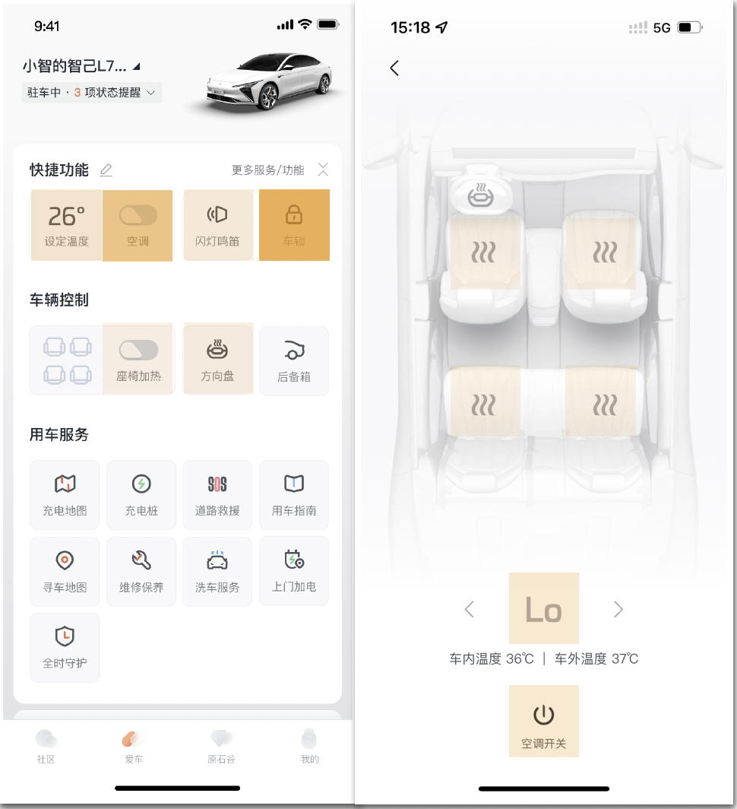
| 序号 | 姓名 | 性别 | 工作部门 | 车辆品牌 | 用车时长 | APP车控使用频率 | 智能产品使用情况 |
|---|---|---|---|---|---|---|---|
| 1 | 高** | 男 | 创意策略与发布 | 智己 | 0–1年 | 一天多次 | 空调、指纹锁、摄像头 |
| 2 | 吕** | 男 | 区域运营 | 名爵6PHEV | 1–3年 | 一周2–3次 | 指纹锁、安防 |
| 3 | 梁** | 男 | 三电策略与开发 | 智己 | 0–1年 | 一周2–3次 | 指纹锁 |
| 4 | 徐** | 男 | 智能座舱产品 | 智己 | 0–1年 | 一天多次 | 智能音箱 |
| 5 | 曾** | 男 | 智能座舱产品 | 蔚来 | 1–3年 | 一周2–3次 | 扫地机器人、门锁 |
| 6 | 李* | 男 | 电子电气部 | 智己 / 福特蒙迪欧 | 0–1年 / 5年以上 | 一天多次 | 没有 |
| 7 | 陈** | 男 | CSOP用户运营 | 领克03 | 1–3年 | 一天一次 | 智能遥控 |
| 8 | 屈** | 男 | 感知提升LAB | 智己 / 大众 | 0–1年 | 一周2–3次 | 台灯、音箱、闹钟 |
| 9 | 陈** | 女 | PMO | 智己 | 0–1年 | 一天多次 | 没有 |
| 10 | 徐* | 男 | 部署运维 | 智己 | 0–1年 | 一天一次 | 没有 |
| 11 | 徐* | 男 | APP数字产品部 | 智己 | 0–1年 | 一天多次 | 台灯、窗帘、扫地机器人 |
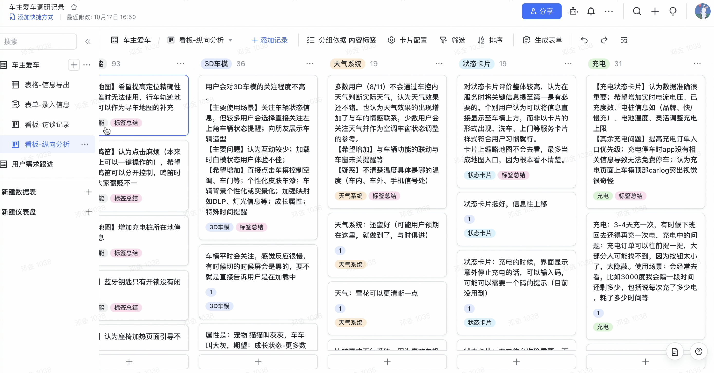
11位深度访谈 · 5个维度 · 覆盖常规场景、特殊场景、页面布局、3D车模、车辆服务
在车主用车场景中，空调是被提及使用频次最高的远控功能
11位车主均会在驾驶前远程打开空调，营造舒适车辆环境，但抱怨空调开启成功率不高，且有时达不到设定温度
希望增加车窗远程控制，并且车窗可以与空调联动，加快降温效率或通风
由于受访者大多为通勤场景，希望增加空调预约开启功能，在常规且固定的用车场景下，简化用户操作过程
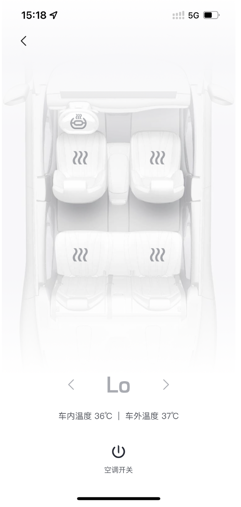
夜晚用车不希望鸣笛打扰他人，建议把闪灯和鸣笛分开控制，并设定合适的响应时长
家人或有儿童乘车时，希望提前开窗通风，上车前有健康的空气环境
有儿童乘车时希望远程提前开启音乐，缓解儿童焦躁情绪，防止孩子吵闹
现在只能前排操作音乐和媒体，希望增加后排乘客空调与音乐控制功能
| 场景 | 子场景 | 目的 | 行为 | 问题 | 期望 |
|---|---|---|---|---|---|
| 上车前 | 上班通勤 | 查看车内温度，判断是否需要降温或通风 | 打开空调 | 需要先打开空调，操作繁琐 | 简化操作步骤，无需打开空调，首页直接显示 |
| 给车内快速降温 | 打开空调 | 调温速度较慢，效果较差 | 车窗配合下降，空调预约开启 | ||
| 利用手机内地图导航 | 将地图发送到车机 | 微信内的地图无法发送 | 提高平台通用性 | ||
| 上车前 | 外出游玩 | 查找车辆位置 | 使用寻车地图 | 位置精确度不高 | 提升位置精确度 |
| 查找车辆位置 | 使用闪灯鸣笛 | 响应不及时，30s 时长不合适 | 及时响应 | ||
| 上车前 | 夜晚用车 | 查找车辆位置 | 使用闪灯鸣笛 | 鸣笛太吵 | 不要鸣笛 |
| 上车前 | 儿童乘车 | 营造适合儿童的乘车环境 | — | 没有对应功能 | 提前开窗通风与播放音乐 |
| 行驶中 | 后排乘车 | 调整空调音乐 | 使用车内语音控制 | 后排语音控制不精准 | 后排乘客精确控制 |
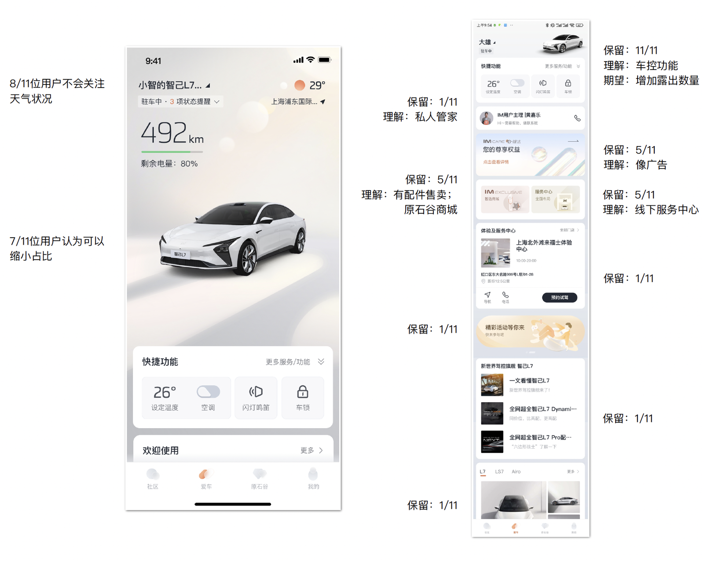
几乎所有受访者表示，几乎不使用体验中心以下卡片楼层，建议可以弱化或省略
车主希望爱车页面显示能耗、部件损耗程度等车况信息，以便增强车主对于车辆的掌控感
初次使用电动汽车，对于续航存在里程焦虑，对车辆的行驶里程、当下状态（零部件报错和故障）会十分在意
希望可以举办地区能耗排行竞赛，通过与其他车主的比赛，彰显车主的驾车实力
希望增加车辆行驶旅程与足迹地图，增强车主与车辆的情感连接，制造专属回忆
建议在数据准确和故障可控的基础上，提供类似油车整车质检的反馈信息，或胎压、里程（参考电马）这些信息
空调、车锁、充电地图、闪灯鸣笛、寻车地图、用车指南（刚用车时会用到）、精洗服务、维修保养
希望取消折叠或露出按钮更多，常用按钮如车锁能够更醒目
空调内页，看不出座椅加热可点击
增加充电桩所在地停车费信息
认为点击麻烦（本来在钥匙上可以一键操作），希望闪灯与鸣笛可以分开控制，鸣笛时长 30s 大家褒贬不一
希望提高定位精确性、信号差时无法使用，行车轨迹地图或许可以作为寻车地图的补充
图标编辑按钮不明显，且容易误读成重命名
车主较少与车模互动，现有车模可交互可玩的功能较少，缺少动机
希望点击车模相关区域可控制车门、车窗、后备箱，增加车模功能价值
希望车模可以个性化调整，如车牌、车漆、装扮、背景环境等，增加可玩性
建议缩小3D车模部分屏幕占比，以提高首屏信息展示效率
建议寻找方式代替打开爱车页面时车模完全跳出的白模，用户体验感不佳，稍显突兀
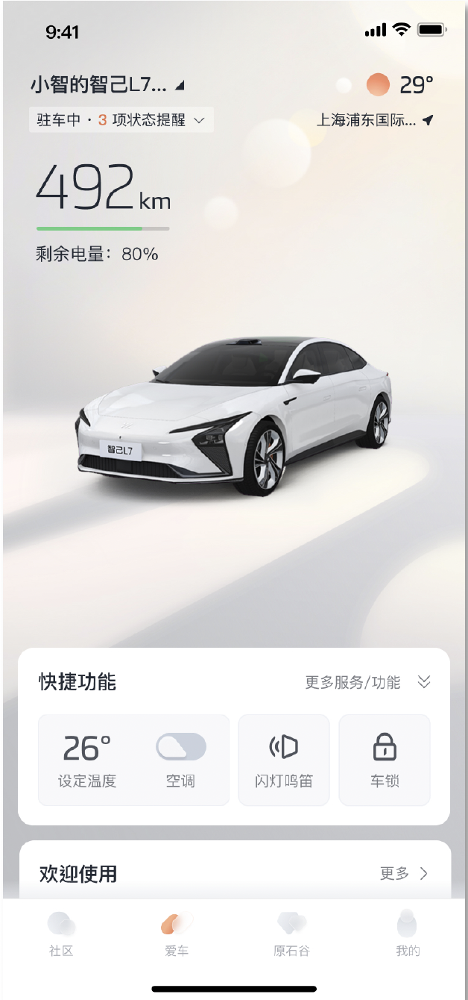
充电体验
6/11位车主表达充电地图是他们高频使用的功能
2/11位受访者希望增加充电桩所在地停车费及支持免费停车的信息，以帮助挑选合适的充电站
6/11位表示充电时希望卡片增加显示充电桩品牌与快/慢充、实时电流数据、已充度数、电池温度等信息
查看3000度免费权益剩余时，查找充电订单的流程不够顺畅，希望可以直接点击剩余电量跳转至充电订单
寻车地图
由于信号不稳定且大多用户常在地库停车，2/11位受访者希望增加每次驾车后终点的定位，以便在游玩或下班后轻松找到车辆所在位置
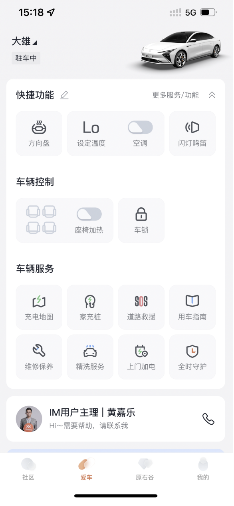
车主希望能够在手机上编辑，在不同平台分享 Carlog 视频
车主抱怨 Carlog 视频导出不方便，希望能够与 APP 联动直接传输至手机，并在手机上编辑
尽管车主想要炫耀 DLP 的功能，但实际在 DLP 灯光演示场景下，折返于车内外很尴尬，希望能直接在手机上控制 DLP 灯光切换
希望增加 DLP 灯光样式分享社区与 Carlog 剪辑模板社区，在更多的社交平台上，分享自己所创作的作品吸粉
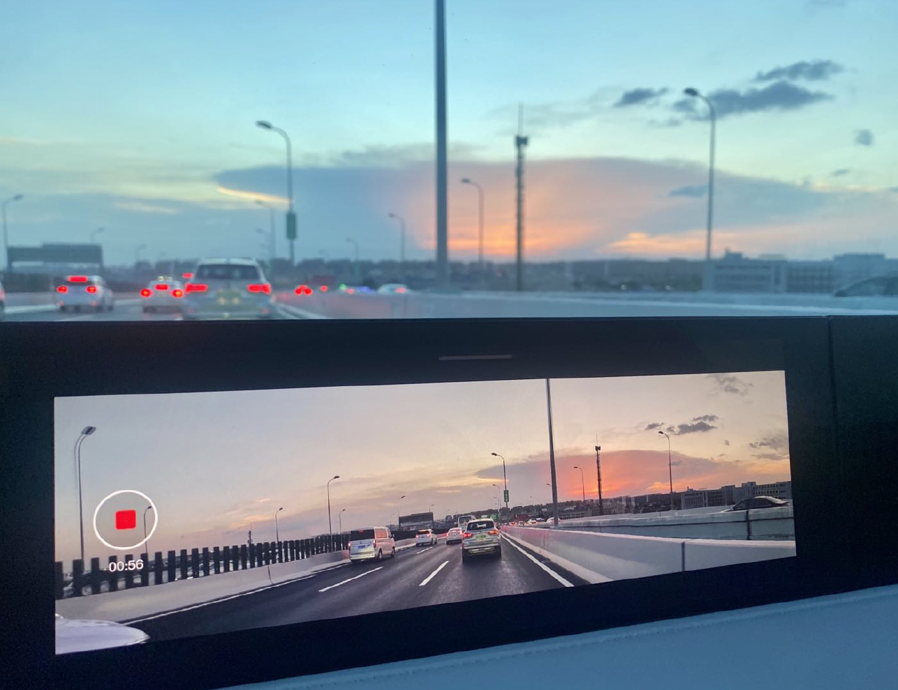
当前车主与车辆情感化链接较弱，车辆工具属性较强
7/11位受访者将车辆比喻为工具，是满足基本出行需求的工具，但也有车主赋予车辆玩具、朋友、宠物等额外情感属性，总体来讲工具属性仍占主导，与车辆情感链接较弱
5/11位用户希望更细致的授权权限选择。希望增加时间段、车速与电量限制、行车状态、车窗后备箱等部件控制、被授权人操作详情
11位参与者中有 X 位反映了此痛点及需求
是否在关键业务流程上，没有这个功能会影响任务完成
是否有好的替代方案（0–4）【需求探索型项目】
是否容易找到替代方案（0–4）【可用性项目】
现状对用户主观情绪是否有消极影响（0-没有，1-轻微，2-有些，3-较大，4-严重）
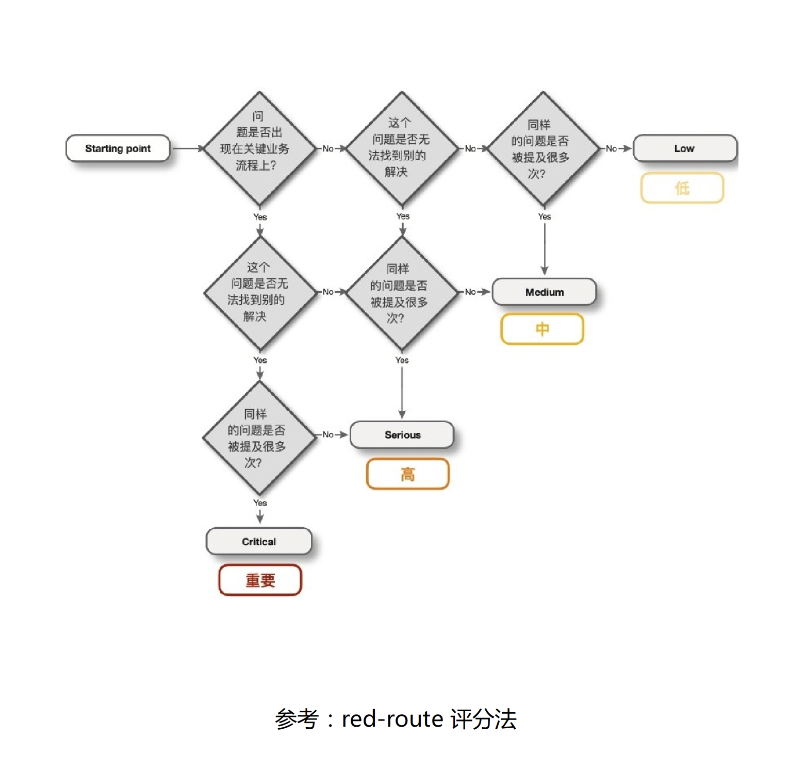
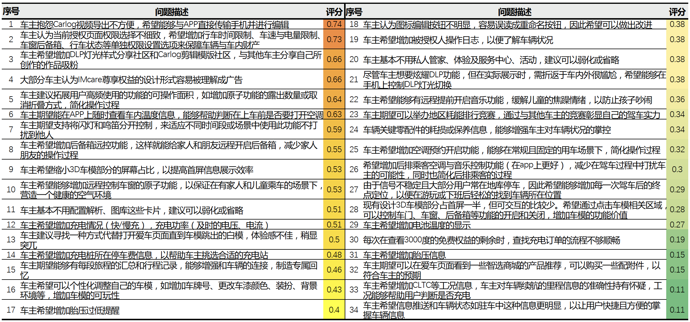
通过设计冲刺快速定义爱车首页需要解决的关键问题与衡量指标
「我们可以怎样」的提问方式放意保持一定程度的模糊性来扩展探索空间的可能性。
「我们」——我们要一起做这件事，相互补充相互促进。
「可以」——我们可以把想法抛出来，可能有用也可能没有用，无论怎样都没有关系。
「怎样」——代表了解决方案是存在的，帮助我们探索各种可能，而不仅仅是执行我们认为的解决方案。
格式：我们用什么办法让用户有什么样的体验 要求：5–6条 HMW / 人
HMW — 我们如何让用户在上车时就能感受凉爽？
HMW — 我们如何让用户在上车前就能便捷地打开空调？
HMW — 我们如何让用户在上车前就看到车内温度？
在 1min 内向大家介绍 HMW（可挑选 1–2 条）：
阐述完毕后将 HMW 便签交给小助理；在阐述过程中，HMW 便签会按主题进行分类
针对 HMW 分类进行问题定义及重写，将分类后的 HMW 问题重新整合，使其更清晰、更聚焦
每人 3 票，对重新定义后的 HMW 问题进行投票，选出最需要解决的核心问题
根据投票结果确定设计目标与衡量指标，为后续设计方案提供方向
爱车首页 HMW 问题分类及重写 · How Might We
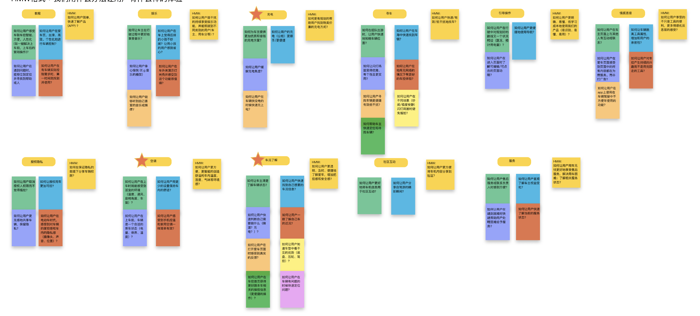
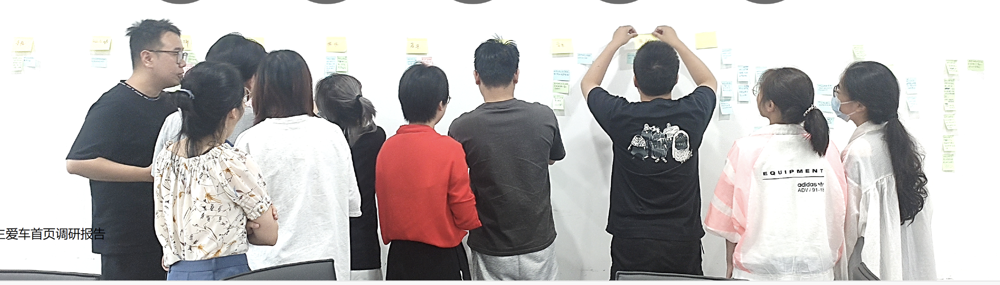
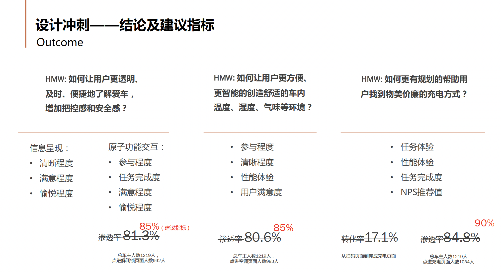
车主爱车首页调研报告
车主用车场景以上班通勤为主，上车前打开空调和解开车锁是远控高频使用功能，但由于信号连接等原因导致成功率不高；除此之外，闪灯鸣笛、寻车地图等功能同样较为常用。在一些特殊场景中，出于通风换气、安抚儿童等需要，还希望增加远程车窗、音乐控制等功能。
车主认为爱车页面应当专注于日常使用车辆需要，访谈用户认为体验活动中心、活动卡片、配置解析、图库等卡片点击次数不高，且在社区已有类似内容，可以移除或缩小占比。奇怪的是，数据显示，车主人均点击图库卡片次数（2022/07/04–2022/08/03）仅低于私人管家与权益卡片，为 4.85 次，与访谈结论相左。
车主爱车首页 3D 车模可互动性与功能性较差，因此车主认为其占比过大，而原子功能常用功能如空调、车锁、充电地图、闪灯鸣笛等按钮数量超过目前露出数量，造成使用不便，可以取消折叠或增加露出数量。
车主赋予车辆玩具、朋友、宠物额外情感属性，但整体与车辆情感化链接较弱，车辆仍以工具属性为主，可以增加 3D 车模个性化设置并使车载语音更智能。
车主使用 Carlog / DLP 频次较低，这与功能本身可玩性较差有关，同时也应增加视频传输至手机编辑分享、DLP 灯光手机切换、内容分享社区等手车互联功能。
完善用户核心场景下的车控需求
结合产品长短期规划，甄别并解决目前用户核心痛点的同时满足后期长期规划的可扩展空间
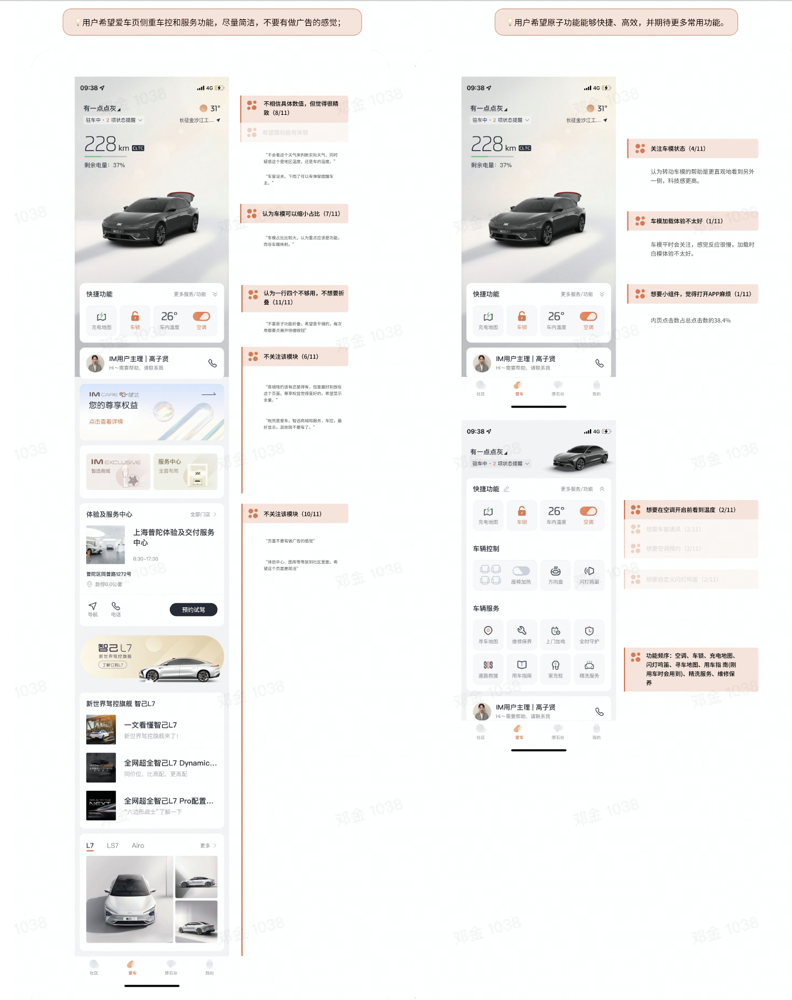
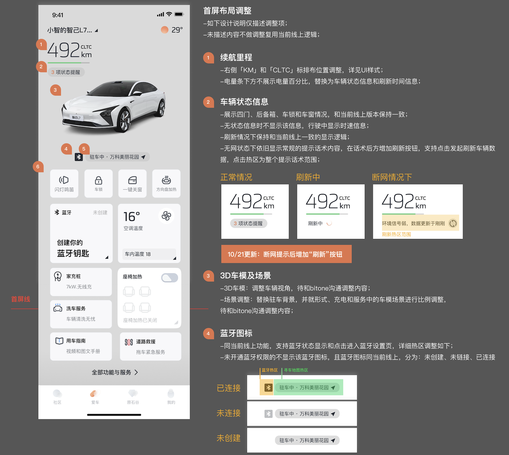
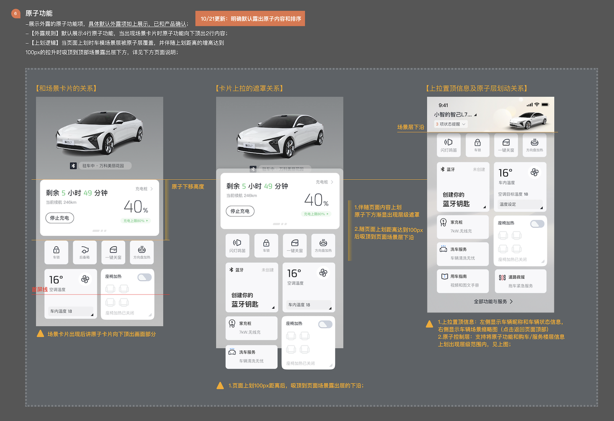
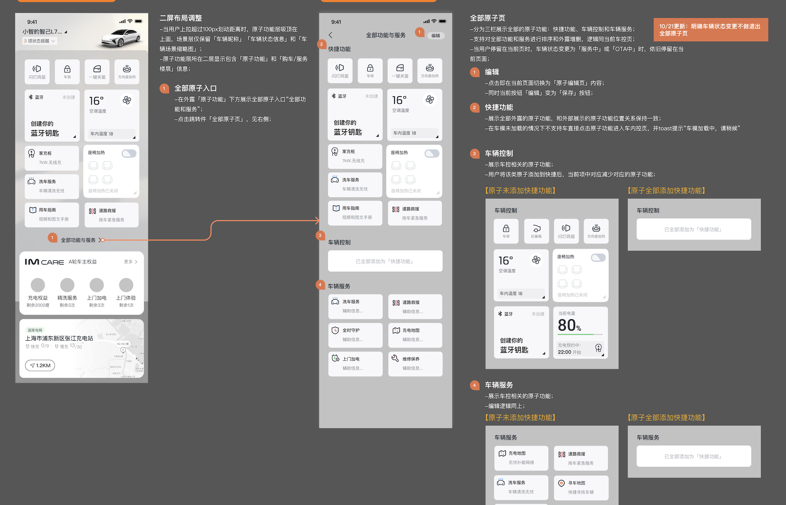
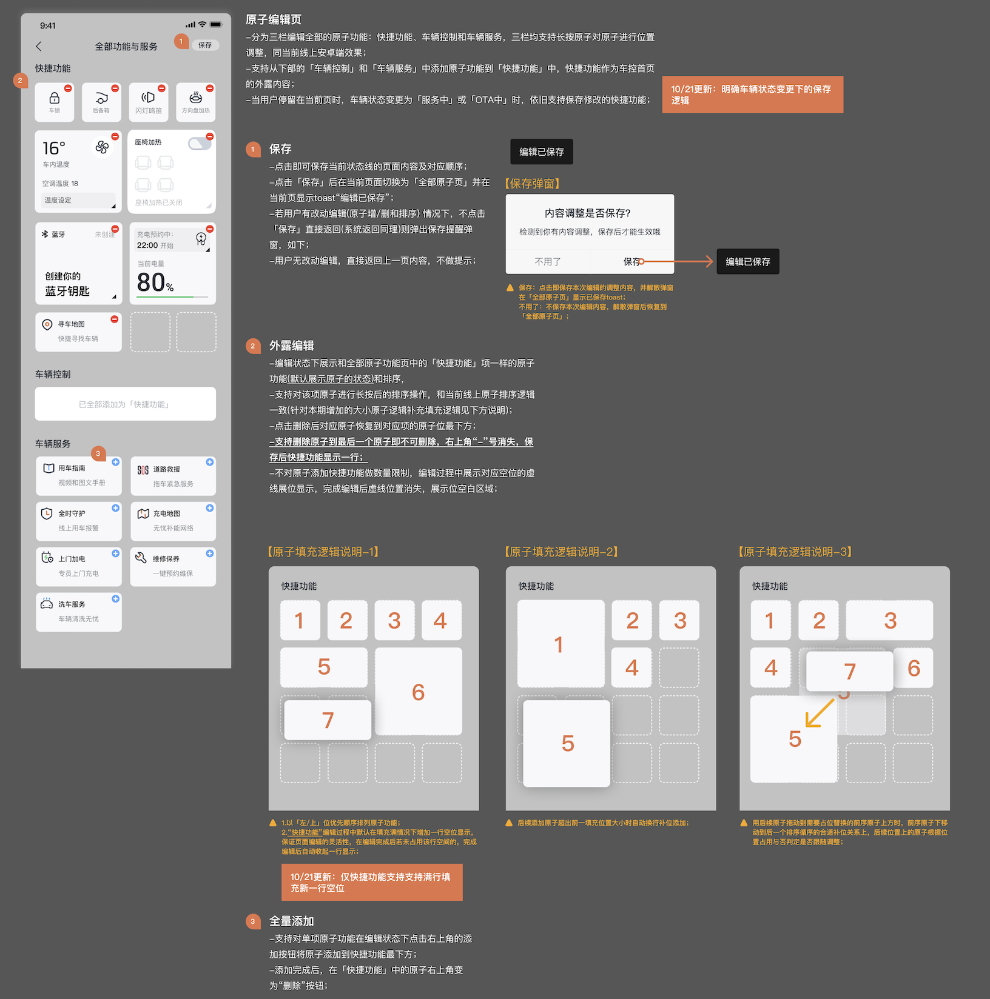
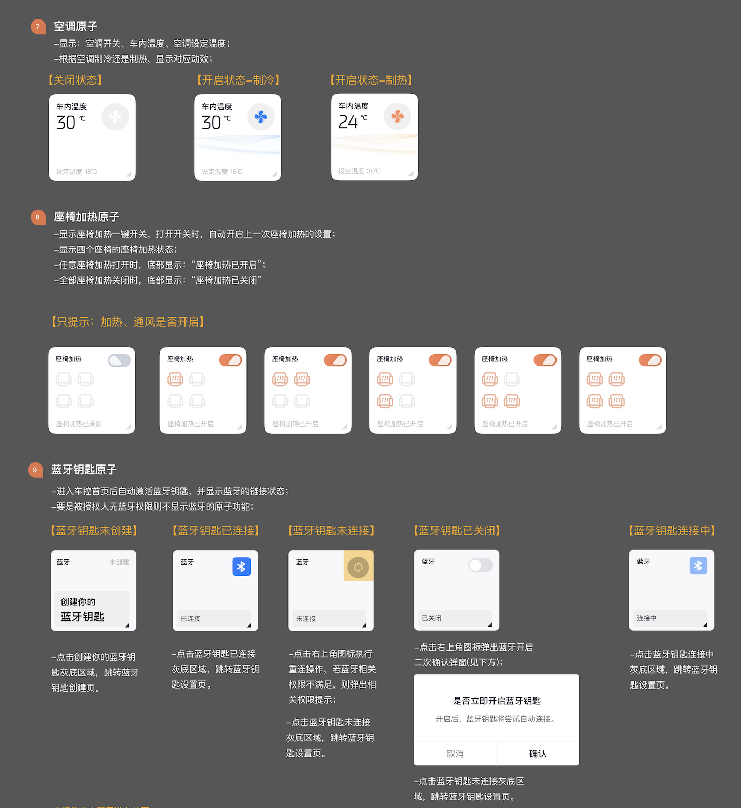
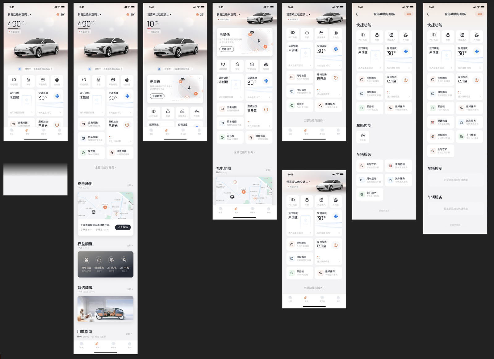